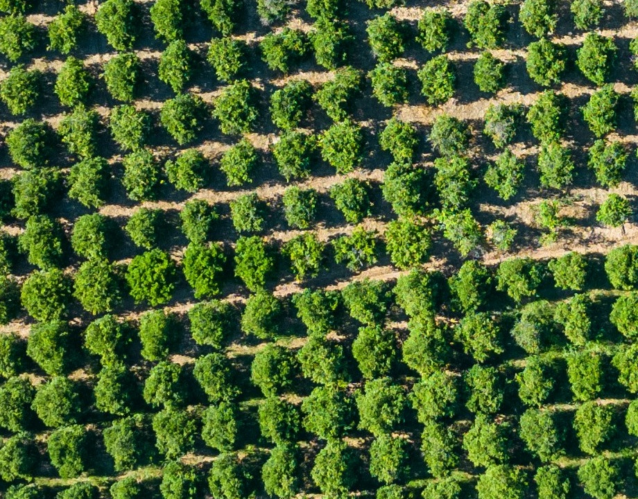
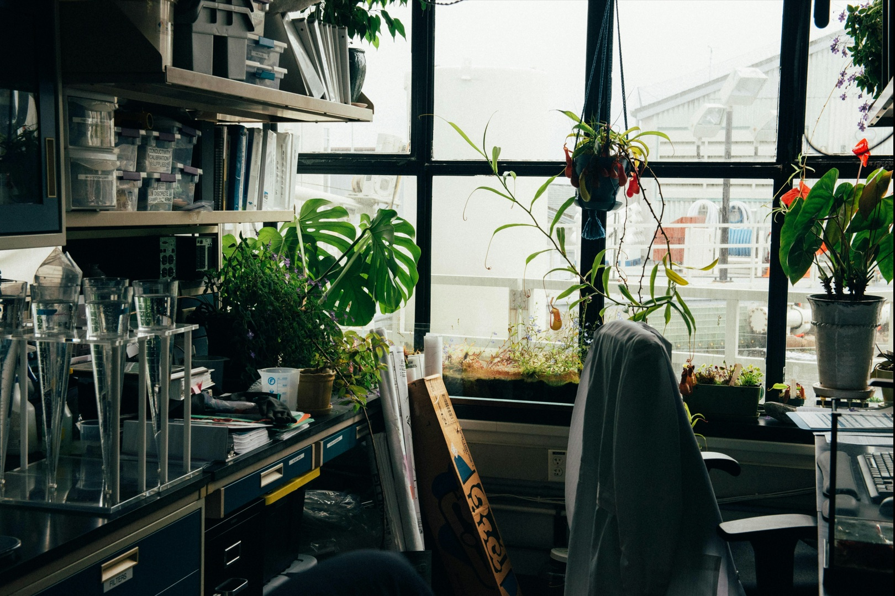

No AgriRS Lab INPE, acreditamos que ciência, tecnologia e colaboração podem transformar a agricultura e o meio
ambiente.
alhamos com sensoriamento remoto e geoinformática para monitorar cultivos, estimar safras e apoiar decisões
estratégicas que impactam diretamente a sustentabilidade e a segurança alimentar.
Se você também acredita no poder da ciência para gerar impacto positivo, venha construir esse futuro com a
gente.

Por que se juntar ao AgriRS Lab?
Atue em projetos inovadores de monitoramento agrícola e ambiental.
Trabalhe lado a lado com pesquisadores de referência no Brasil e no mundo.
Tenha a chance de participar de publicações científicas e eventos da área.
Contribua com soluções que apoiam políticas públicas e práticas agrícolas sustentáveis.
Iniciação Científica (IC)
Para estudantes de graduação que desejam iniciar na pesquisa científica.
Estágios
Vivência prática em monitoramento agrícola, análise de dados geoespaciais e apoio a projetos.
Pós-Graduação
Programas do INPE em Sensoriamento Remoto.
Colaborações
Pesquisadores, instituições e empresas que desejam desenvolver projetos em conjunto conosco.

Como se candidatar
Escolha a modalidade que mais combina com você.
Prepare sua documentação (currículo, histórico, carta de motivação, conforme exigência).
Envie sua candidatura para agris@inpe.br ou pelo formulário de contato.